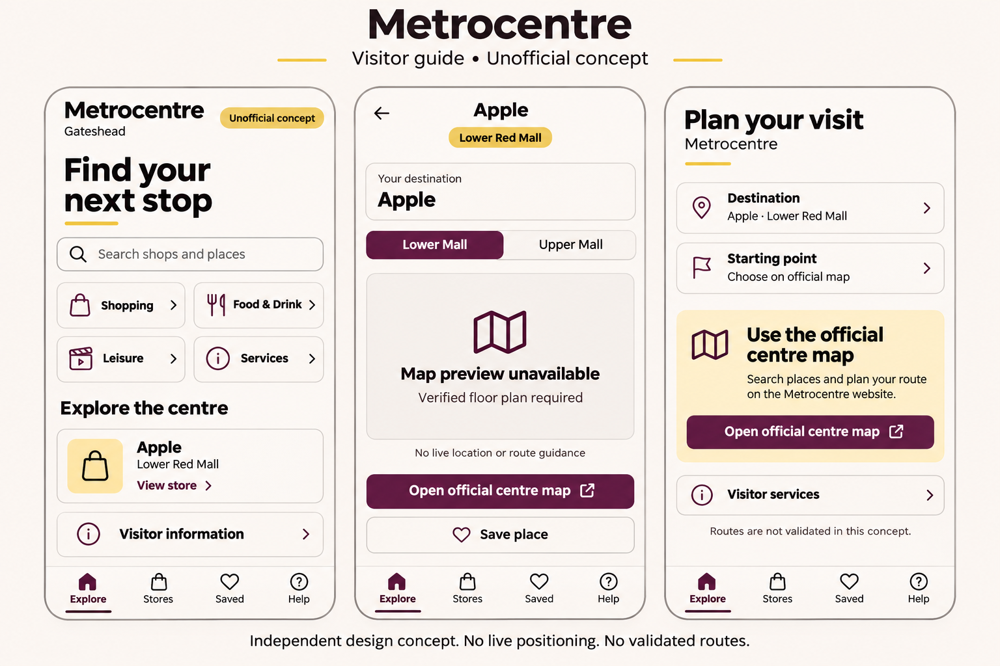

Independent conceptExplore the demo
Metrocentre visitor guide concept
A mobile-first independent concept showing a searchable four-place documentary sample, saved places and links to official visitor information.
Independent concept demonstration. Not commissioned or endorsed by Metrocentre. Metrocentre is not represented as a customer.
- Indoor map · Not included
No indoor map is included. The destination screen explicitly shows an unavailable map preview and disabled floor controls. A verified and authorised floor plan is required. - Navigation · Concept only
Visit planning is a concept with a destination summary and an external link to the official centre map. No route calculation, indoor positioning, directions or automatic destination transfer is implemented. - Inventory management · Proposed extension
Proposed future inventory integration, subject to authorised retailer data and a separately agreed scope. No stock availability or inventory management is implemented. - Advertising · Proposed extension
Proposed future advertising capability, subject to commercial agreement and content approval. No advertising system or paid campaigns are implemented.
Scope & limitations
- No physical indoor navigation
- Only four documentary places
- No inventory or advertising integration
- No complete accessibility certification
- External links not newly verified